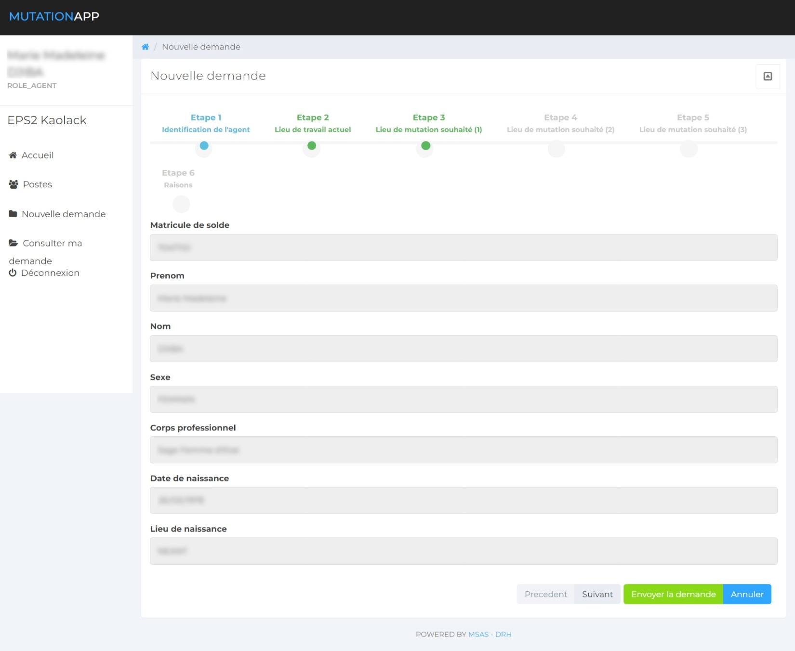
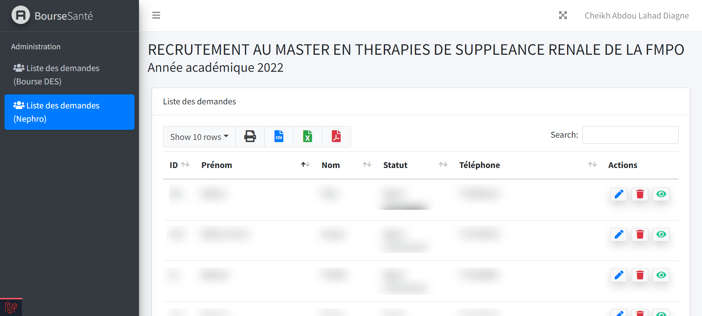
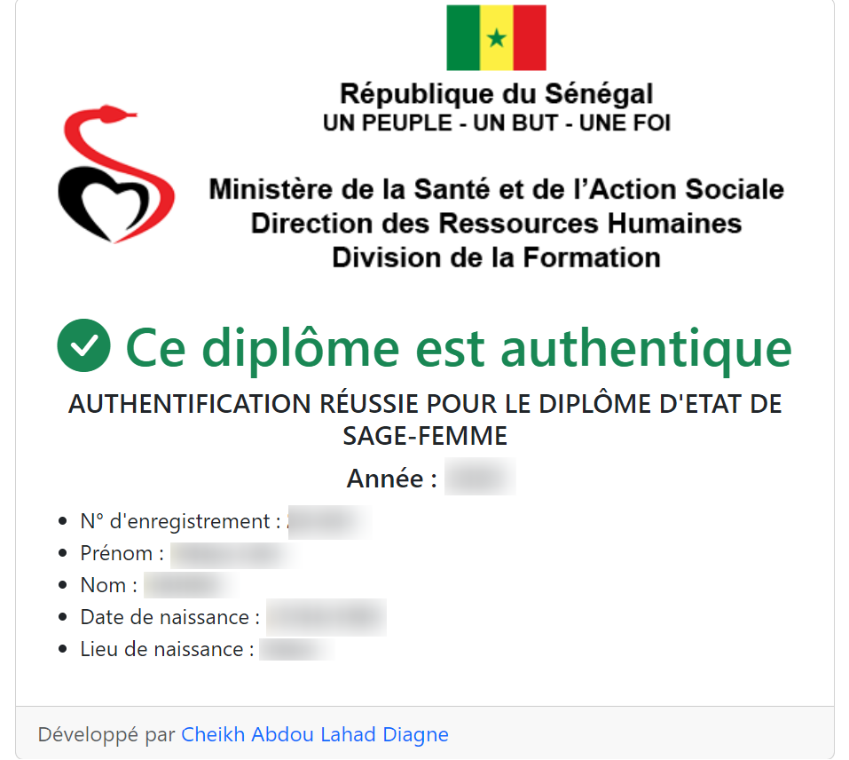

Challenge
Replace manual administrative processes with structured digital services. MIRSAS handles workforce mobility; e‑DRHSanté digitises five administrative procedures.
The two platforms are distinct and complementary. They operate within a national HR environment covering about 25,000 health workers, without that figure representing active users of either service.
MIRSAS
Digitising health worker mobility
Developed mainly from September 2020 to December 2021 and then maintained in production, MIRSAS structures submission, review and validation of transfer requests.
Contribution to stakeholder consultation, requirements, architecture, modelling, development, testing, deployment, documentation and training.
e‑DRHSanté
Digitising five administrative procedures
The portal turns the procedures into structured workflows from request to processing, improving access and case tracking.
The contribution covers architecture choices, process modelling, development, testing, deployment and training.
Related services
The same approach supported a scholarship-request system, Java/Spring diploma authentication using QR codes, staff exit tracking and electronic archiving.
Each delivery combined needs analysis, architecture, testing, documentation, training and change management.
Launch
The Senegalese Press Agency covered the launch of e‑DRHSanté and its contribution to modernising administrative procedures.
Gallery



